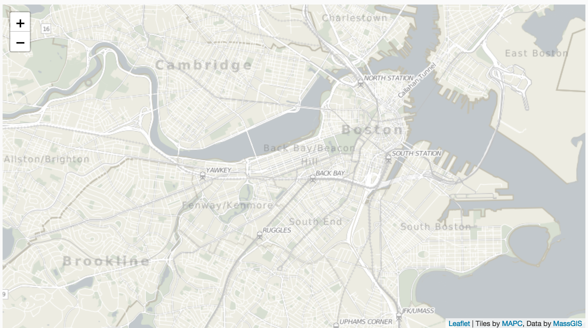
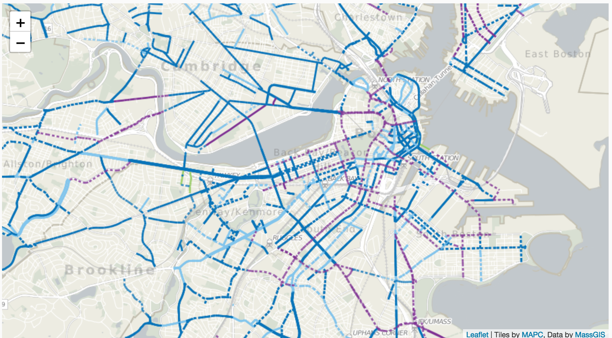
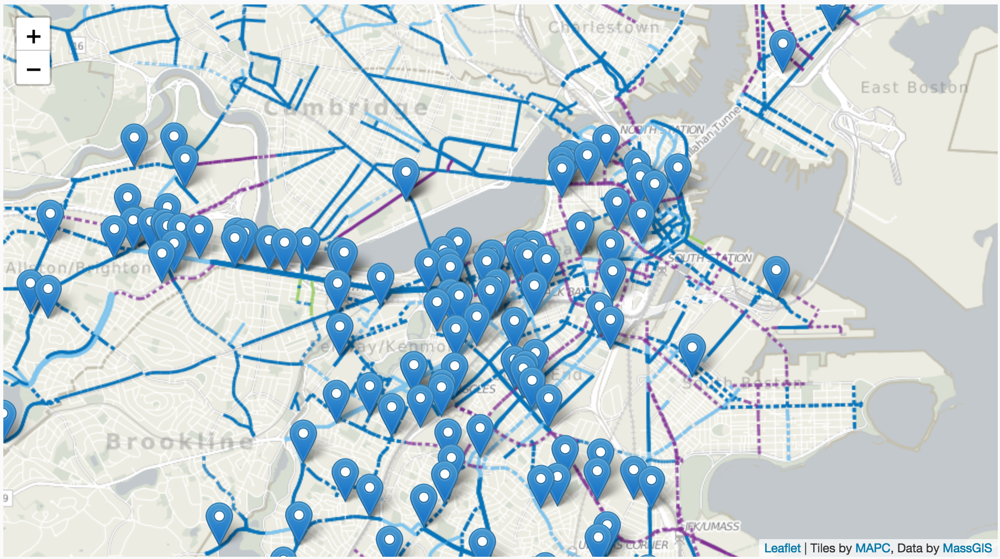

Basics of Data Driven Maps With Leaflet.js
Bicycle collisions in Boston
Part of a data-driven map talk given by Lisa Williams at #ONABoston on August 2, 2017.
What is Leaflet, Anyway?
Leaflet is a lightweight mapping library for Javascript. Well-documented, with an active developer community, and weighing in at only 38k, it is one of the leading mapping libraries used on the web today.
Leaflet Basics
Every Leaflet map has a few things in common:
- A basemap;
- A tile layer corresponding to that basemap;
- An initial view, which sets the center point of the map and the zoom level.
All of these are called on the .map class, Leaflet's central class.
But just showing a basemap and its corresponding tiles isn't all that interesting, and leaflet probably wouldn't exist if simple .png images of maps would do the job. Leaflet allows us to make data-driven maps with elements that we can style with CSS.
Leaflet consumes GeoJSON, a flavor of JSON that lets us express latitude/longitude pairs and lots of other kinds of data about those points. Here's the GeoJSON that contains the points for this map.
For our example map, we have three layers: a basemap, a layer showing bike lanes and bike facilities, and our data layer, showing bike collisions in Boston.
The basemap
In our example map above, we're using a basemap and tiles from the Metropolitan Area Planning Commission, an agency of the state of Massachusetts that does civic planning work. MAPC does a lot of transportation infrastructure work, including work that attempts to improve conditions for pedestrians and cyclists.
At this stage, we also give our map an initial view and a centerpoint.
We set our initial view like so, giving our map a width of 900 pixels and a height of 600 pixels:
#map {
width: 900px;
height: 500px;
}
We are also setting its centerpoint by giving it a variable and loading that variable with latitude and longitude coordinates:
var map = L.map('map').setView([42.35, -71.08], 13);
Now our map looks like this:
Adding a layer on top of the basemap
So we now have the basic components of a Leaflet map, but it's not very interesting yet. Let's add a layer, also from MAPC, showing bike lanes and bike facilities.
Now our map looks like this:
Adding the data layer
That's interesting, but how does it relate to, say, bike accident data?
Our map uses the following dataset on bike/car collisions.
Since that dataset is in Excel, I needed to convert it into GeoJSON. JSON is a data format used to pass data between many different applications, and GeoJSON is a variant with special features to express geographical data. But first, I noticed that what looked like lat/lon data was actually not. That meant we had to geocode the addresses. Geocoding is the process of turning plain-English street addresses into latitude and longitude coordinates that we can then use in our map. After concatenating fields with the address, city and state name into a single field (since most geocoders want it that way), I handed the .csv file to a batch geocoder, which translated the plain-english addresses into lat/lon pairs.
If you think this sounds like more work than building the map, you are absolutely correct. By far the most time I spend on creating data visualizations is spent on data cleanup -- getting data into formats data visualization tools and libraries can use.
Our CSV now has latitude and longitude, but we still have data cleanup to do: our file needs to be converted into GeoJSON, which can be done at ConvertCSV.com.
At last! We have a data source Leaflet can use to drop points on our map, which lets us create a new layer comparing bike collisions with bike lanes and facilities.
Now our map looks like this:
For more information about Leaflet, see the sidebar for documentation and see below for other examples of maps made with Leaflet.
To connect with me, see the sidebar for my bio and contact information.
Leaflet Examples
- Grand Canyon Geology Note the use of legends that respond to where a user mousovers
- LeafArctica, which maps satellite photography of Antarctica with a set of tiles with lat/lon coordinates. You can match photos to lat/lon to make 'photomaps.'
- Windy, a leaflet-based map that uses realtime data from weather stations
- Zelda: Breath of the Wild Maps don't have to be of Earth! Here's a map of Hyrule from the popular video game Zelda.
- Every Shot Kobe Bryant Ever Took They don't even really have to be maps at all, as with this diagram of an NBA player's shots.